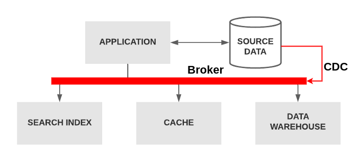
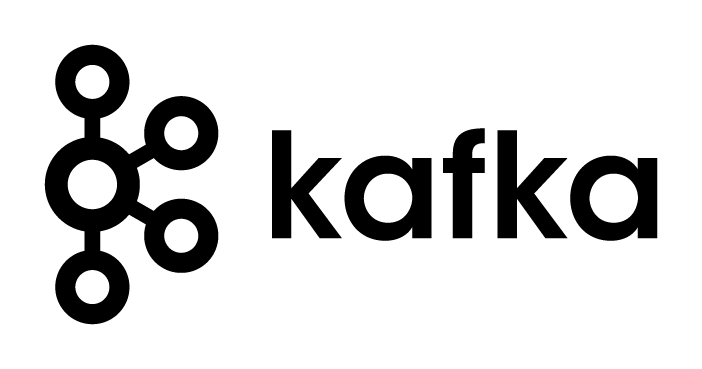

Application overload with responsabilities outside its domain
Replicate data to datawarehouse
Store and update cache
Store data in Full Text Search tool
Possible Solution

Instead of going to look for data, you can automatically respond to it with low-latency.
Improves
Application responsabilities shrink
Broker handle data exchange safetly
Broker with CDC replicates database content to an OLAP environment
What is CDC?
CDC - Change Data Capture
Change Data Capture, or CDC, is an older term for a system that monitors and captures the changes in data so that other software can respond to those changes. Data warehouses often had built-in CDC support, since data warehouses need to stay up-to-date as the data changed in the upstream OLTP databases.
Debezium is a set of distributed services that capture row-level changes in your databases so that your applications can see and respond to those changes. Debezium records in a transaction log all row-level changes committed to each database table.
In the field of databases in computer science, a transaction log (also transaction journal, database log, binary log or audit trail) is a history of actions executed by a database management system used to guarantee ACID properties over crashes or hardware failures. Physically, a log is a file listing changes to the database, stored in a stable storage format.
{"before":{...},"after":{...},"metadata":{"log file":"path to log file","transaction_id":"","timestamp":"when this event happened",...}}
What is Kafka ?
“Káf-ka”
Kafka
Apache Kafka is a fast, scalable, durable, and distributed messaging system that records all messages in replicated, partitioned, and totally-ordered transaction logs.